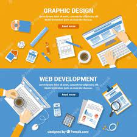
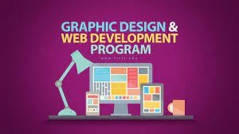
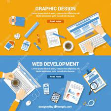
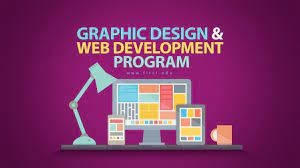

I AM
USAMA SAEED
USAMA SAEED
Hey, I am a frontend web developer and web designer. My core skills lie in working with frontend technologies like HTML. CSS, JavaScript. I also use frameworks like bootstrap for css styling. I also do graphics design for Web layouts and UI, along with premium logo designs and banners. Efficient work is my priority.I can do graphic design work I am expert in it. Graphic design is a craft where professional create visual content to communicate message by applying visual hierarchy designer use typography and picture to meet user specific needs and focus on the logic of displaying elements in interactive design to aptimize the user. I can make this website and expert in it web development is a front and end development. Web development is the work involved in developing a website the internet (www)or an intranet and among web professionals. Web development usually refers the main non design aspects of building web sites writing markup and coding I can make the web site and I am expert in it web design and arranging content online today designing a website goes beyond a esthetic To include the website overall functionality web design Mobil app and user interface Web design understand the key concept of visual design line and k wo the basic of HTML and understand the CSS web design is familiarize yourself with UI

 





I can make the web site and I am expert in it web design and arranging content online today designing a website goes beyond a esthetic To include the website overall functionality web design Mobil app and user interface Web design understand the key concept of visual design line and k wo the basic of HTML and understand the CSS web design is familiarize yourself with UI

Being counted as a leader in website development I am a passionate and result-oriented web development service provider.I can make this website and expert in it web development is a front and end development. Web development is the work involved in developing a website the internet (www)or an intranet and among web professionals. Web development usually refers the main non design aspects of building web sites writing markup and coding I am a artistic website developer, designer, tester and quality engineer assist businesses to manage their routine activities.

I can do graphic design work I am expert in it. Graphic design is a craft where professional create visual content to communicate message by applying visual hierarchy designer use typography and picture to meet user specific needs and focus on the logic of displaying elements in interactive design to aptimize the user